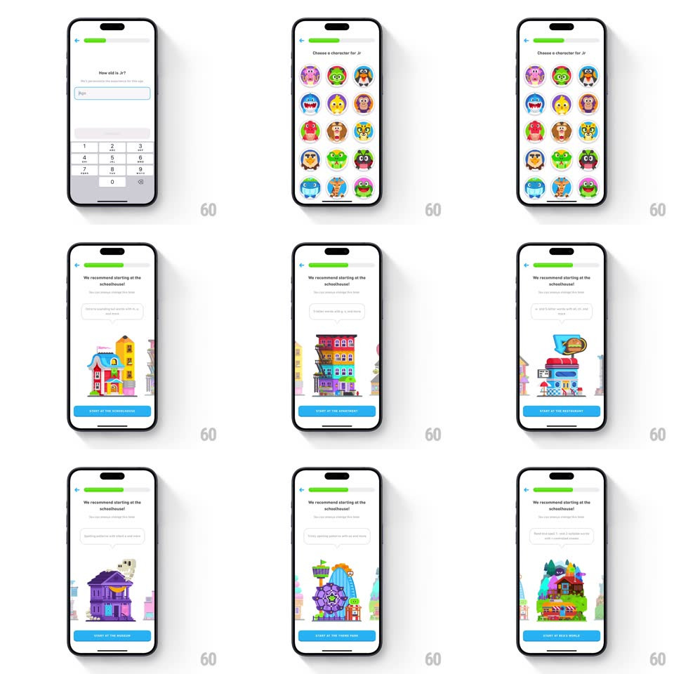

Media
Frame-by-frame

Rebuild this interaction 1:1: Duolingo ABC's onboarding flow - an age-entry screen with a numeric keypad and a growing green progress bar, a character-picker grid of monster avatars, and a "We recommend starting at..." screen with a horizontally swipeable carousel of illustrated buildings whose names swap into the blue start button.

Rebuild this interaction 1:1: Duolingo ABC's onboarding flow - an age-entry screen with a numeric keypad and a growing green progress bar, a character-picker grid of monster avatars, and a "We recommend starting at..." screen with a horizontally swipeable carousel of illustrated buildings whose names swap into the blue start button.
## Integration
Integration: stack-agnostic spec - springs given as stiffness/damping, timed motions as duration + curve; map every value to your framework and animation library of choice.
## Scene
White screens with a top progress bar (green fill grows per step) and back chevron. Age screen: "How old is Jr?" with an Age field and numeric keypad. Character screen: "Choose a character for Jr" over a 4-column grid of round monster avatars. Recommendation screen: "We recommend starting at the schoolhouse!" with a large building illustration and a blue "START AT THE SCHOOLHOUSE" button.
## Motion spec
Pattern: stepped onboarding with a swappable-place carousel.
- Keypad entry: each digit pops into the Age field (scale 1.2 -> 1, spring ~450/20); the progress bar extends per step (spring ~320/22).
- Screen changes slide horizontally (spring ~330/24), title and content staggering in (60ms apart).
- Character grid: avatars pop in randomly ordered (scale 0.6 -> 1, spring ~380/18, 50ms apart); tapping one gives it a green ring (scale ring from 1.2 -> 1) and a happy wiggle (rotate +-6deg, 2 cycles).
- The building carousel: swiping crossfades the illustration (300ms) while the button's label flips to the new place ("START AT THE POST OFFICE", vertical roll, 250ms); a link under the title offers the other starting point.
- The blue start button breathes faintly (scale 1 -> 1.015, 2.4s) until pressed.
## Calibration
- Progress bar only ever grows during forward moves; going back shrinks it honestly.
- The recommendation's button label is a real template bound to the carousel - never static text.
## Reduced motion
Crossfades everywhere; carousel switches without roll.
## Don't miss
- The carousel changes the CTA's destination, not just the picture - label and action stay bound.
- Monster avatars are tappable personalities, not a radio list - each reacts.